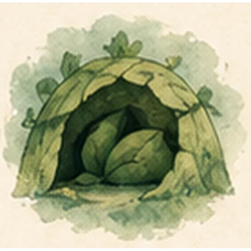
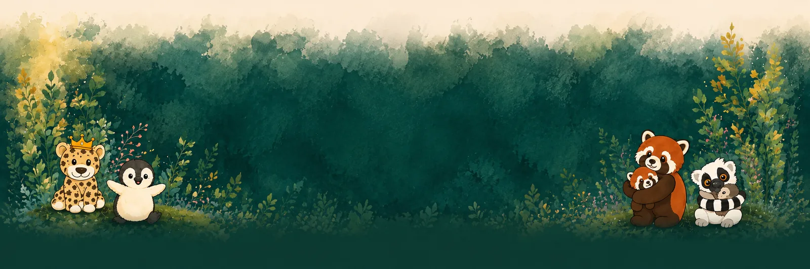

Wissensreihe · Teil 5 von 6
Sicherheit vor Lösung
Was traumasensible Begleitung im Alltag bedeutet

Traumasensibel zu arbeiten bedeutet nicht, hinter jedem auffälligen Verhalten ein Trauma zu suchen.
Es bedeutet auch nicht, Kinder über belastende Erfahrungen auszufragen oder schwierige Erinnerungen pädagogisch „aufzuarbeiten“.
Traumasensible Begleitung beginnt viel grundlegender:
Ist dieser Ort sicher?
Ist diese Beziehung verlässlich?
Ist die Situation vorhersehbar?
Hat das Kind Einfluss?
Kann es eine Pause machen?
Wird sein Schutzverhalten beschämt?
Diese Fragen sind nicht nur für traumatisierte Kinder relevant.
Sie verbessern pädagogische Situationen für viele Kinder.
Sicherheit hat mehrere Orte
In deiner Arbeit zu heilpädagogischen Interventionen für traumatisierte Kinder werden unterschiedliche sichere Orte beschrieben.
Der sichere äußere Ort
Ein Raum kann Sicherheit fördern oder Stress verstärken.
Ein sicherer äußerer Ort ist:
- überschaubar,
- vorhersehbar,
- nicht überreizt,
- gepflegt,
- nicht mit Strafe verbunden,
- freiwillig nutzbar.
Ein Rückzugsbereich darf deshalb nicht der Platz sein, an den Kinder geschickt werden, wenn sie „wieder schwierig“ sind.
Sonst wird aus dem Schutzraum ein Sanktionierungsraum.
Der sichere personale Ort
Menschen können zu einem sicheren Ort werden.
Eine verlässliche Bezugsperson ist ansprechbar, hält Absprachen ein und macht sich nicht über das Kind lustig.
Sie weiß nicht immer sofort eine Lösung.
Aber sie bleibt.
Gerade nach Verlust, Flucht oder belastenden Beziehungserfahrungen kann eine solche Person bedeutsamer sein als jede ausgefeilte Methode.
Das sichere Selbst
Kinder brauchen Erfahrungen von Selbstwert und Selbstwirksamkeit.
Sie müssen erleben:
- Ich kann etwas beeinflussen.
- Ich kann Hilfe holen.
- Mein Nein wird wahrgenommen.
- Mein Körper gehört mir.
- Ich kann Anspannung bemerken.
- Ich habe Möglichkeiten, mich zu schützen.
Psychomotorik, kreative Methoden, Rituale und symbolische Arbeit können solche Erfahrungen unterstützen.
Vorhersehbarkeit reduziert Ohnmacht
Unangekündigte Veränderungen, plötzliches Berühren, erzwungene Gespräche oder uneindeutige Regeln können starken Stress auslösen.
Traumasensibles Arbeiten schafft deshalb Transparenz:
Ich sage dir, was als Nächstes passiert.
Niemand zieht dich unter dem Tisch hervor.
Du kannst mir mit der blauen Karte zeigen, wenn du bereit bist.
Wir sprechen zehn Minuten. Danach machen wir eine Pause.
Das sind kleine Sätze.
Für ein Kind, das Ohnmacht erlebt hat, können sie einen großen Unterschied machen.
Rückzug nicht bestrafen
Ein Kind versteckt sich unter dem Tisch.
Der erste Impuls vieler Erwachsener lautet: Es muss da heraus.
Traumasensibel wäre zunächst zu prüfen:
- Besteht eine unmittelbare Gefahr?
- Braucht das Kind Schutz vor Reizen?
- Kann ich Beziehung anbieten, ohne einzudringen?
- Kann ich den nächsten Ablauf verständlich machen?
Ein Satz könnte lauten:
Du kannst dort kurz bleiben. Ich sitze hier in der Nähe. Niemand zieht dich heraus. Ich sage dir, was als Nächstes geschieht.
Das heißt nicht, dass das Kind den gesamten Tag unter dem Tisch verbringen soll.
Es heißt: Sicherheit kommt vor Konfrontation.
Keine erzwungene Offenlegung
Kinder müssen nicht erzählen, was ihnen passiert ist, damit Erwachsene traumasensibel handeln können.
Direkte Fragen können überfordern:
- Was ist damals genau passiert?
- Warum hast du Angst?
- Wer hat dir das angetan?
Im pädagogischen Rahmen geht es nicht darum, traumatische Erinnerungen zu bearbeiten.
Es geht um Stabilisierung, Beziehung, Teilhabe und Weitervermittlung an qualifizierte Fachstellen, wenn therapeutische Unterstützung notwendig ist.
Grenzen bleiben notwendig
Traumasensibilität darf nicht bedeuten, gefährliches Verhalten ungebremst zu lassen.
Ein traumatisiertes Kind kann andere verletzen. Auch dann braucht es eine klare Grenze.
Ich lasse nicht zu, dass du schlägst. Ich sorge dafür, dass alle sicher sind. Wir sprechen später darüber.
Der Unterschied liegt nicht darin, ob begrenzt wird.
Der Unterschied liegt darin, wie begrenzt wird:
- ohne Beschämung,
- ohne Drohung mit Beziehungsabbruch,
- ohne unnötige körperliche Übermacht,
- mit anschließender Regulation und Reparatur.
Der sichere Ort ist kein hübsches Zelt
Ein paar Kissen und Lichter machen noch keinen sicheren Ort.
Sicherheit entsteht durch Erfahrung:
- Ich werde nicht ausgelacht.
- Meine Pause wird respektiert.
- Regeln gelten verlässlich.
- Erwachsene handeln nachvollziehbar.
- Ich werde nicht zur Offenlegung gedrängt.
- Hilfe steht zur Verfügung.
- Der Ort wird nicht gegen mich verwendet.
Ein äußerlich schöner Rückzugsraum kann unsicher sein, wenn die Beziehung darin nicht trägt.
Ein schlichter Flur kann vorübergehend sicherer sein, wenn dort eine verlässliche Person sitzt.
Sicherheit vor Lösung
Erwachsene möchten helfen. Das ist verständlich.
Doch der Drang, sofort zu lösen, kann zusätzlichen Druck erzeugen.
Manchmal ist der erste sinnvolle Schritt nicht die Erklärung.
Manchmal ist es:
- Wasser holen,
- den Raum verlassen,
- die Tür offen lassen,
- weniger sprechen,
- eine bekannte Person rufen,
- einen Ablauf visualisieren,
- einen Termin vertagen.
Traumasensible Begleitung ist keine besondere Technik für besondere Kinder.
Sie ist eine Haltung, die Ohnmacht reduziert und Würde schützt.
Verstehen. Verbinden. Verändern.
Aber in dieser Reihenfolge.
Drei Fragen für den Alltag
- Was erhöht gerade Sicherheit und Vorhersehbarkeit?
- Wo hat das Kind eine echte Wahlmöglichkeit?
- Braucht es jetzt Reflexion – oder zunächst Regulation?
Quellenbasis: Seminararbeit zu heilpädagogischen Interventionen für traumatisierte Kinder, sicheren äußeren und personalen Orten, sicherem Selbst und Psychomotorik; Waldkätzchen-Konzept zur trauma- und stresssensiblen Praxis.
Sicherheit ist keine Technik, sondern eine Haltung.
Wenn du spürst, dass dein Kind mehr braucht als Konsequenz, lass uns in Ruhe hinschauen. Die Grundlagen dazu stehen im Konzept, für Familien speziell auch hier.
Die ganze Reihe
Verstehen. Verbinden. Verändern.

Manche Fragen klären sich
schneller im Gespräch.
Ich melde mich in der Regel innerhalb von zwei Werktagen.